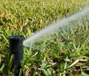

1. Check your toilet for leaks. Put a few drops of food coloring in your toilet tank. If, without flushing, the coloring begins to appear in the bowl, you have a leak that may be wasting more than 100 gallons of water a day.
2. Stop using your toilet as an ashtray or wastebasket. Every cigarette butt or tissue you flush away also flushes away five to seven gallons of water.
3. Put a plastic bottle in your toilet tank. Put an inch or two of sand or pebbles in the bottom of a one liter bottle to weigh it down. Fill the rest of the bottle with water and put it in your toilet tank, safely away from the operating mechanism. In an average home, the bottle may save five gallons or more of water every day without harming the efficiency of the toilet. If your tank is big enough, you may even be able to put in two bottles
4. Put a layer of mulch around trees and plants. Mulch slows the evaporation of moisture.
5. Take baths. A partially filled tub uses less water than all but the shortest showers.
6. Take shorter showers. A typical shower uses five to ten gallons of water a minute. Limit your showers to the time it takes to soap up, wash down and rise off.
8. Check faucets and pipes for leaks. Leaks waste water 24 hours a day, seven days a week. An inexpensive washer is usually enough to stop them.
7. Deep-soak your lawn. When you do water your lawn, water it long enough for water to seep down to the roots where it is needed. A light sprinkling that sits on the surface will simply evaporate and be wasted.
9. Check faucets and pipes for leaks. Even a small drip can waste 50 or more gallons of water a day.
10. Don't let the faucet run while you clean vegetables. Rinse your vegetables instead in a bowl or sink full of clean water.
11. Keep a bottle of drinking water in the refrigerator. This puts a stop to the wasteful practice of running tap water to cool it for drinking.
12. If you wash dishes by hand, don't leave the water running for rinsing. If you have two sinks, fill one with rinse water. If you have only one sink, first gather all your washed dishes in a dish rack, then rinse them quickly with a spray device or a pan of water.
13. Water your lawn only when it needs it. Watering on a regular schedule doesn't allow for cool spells or rainfall which reduce the need for watering. Step on some grass. If it springs back up when you move your foot, it doesn't need water
14. Use your automatic dishwasher for full loads only. Every time you run your dishwasher, you use about 25 gallons of water.
15. Water during the cool parts of the day. Early morning is better than dusk since it helps prevent the growth of fungus.
16. Don't water the gutter. Position your sprinklers so that water lands on your lawn or garden, not in areas where it does no good. Also, avoid watering on windy days when much of your water may be carried off to the streets and sidewalks.
17. Install water-saving shower heads or flow restrictors. Your hardware or plumbing supply store stocks inexpensive shower heads or flow restrictors that will cut your shower flow to about three gallons a minute instead of five to ten. They are easy to install, and your showers will still be cleansing and refreshing.
18. Use a broom to clean driveways, sidewalks and steps. Using a hose wastes hundreds and hundreds of gallons of water
19. Don't run the hose while washing your car. Soap down your car from a pail of soapy water. Use a hose only to rinse it off.
20. Tell your children not to play with the hose and sprinklers. Children love to play under a hose or sprinkler on a hot day. Unfortunately, this practice is extremely wasteful of precious water and should be discouraged.